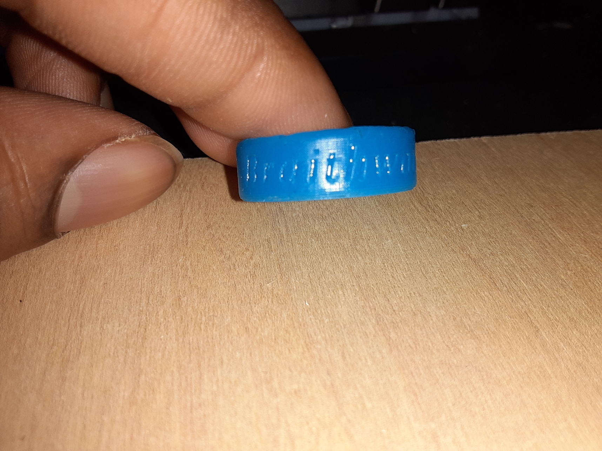
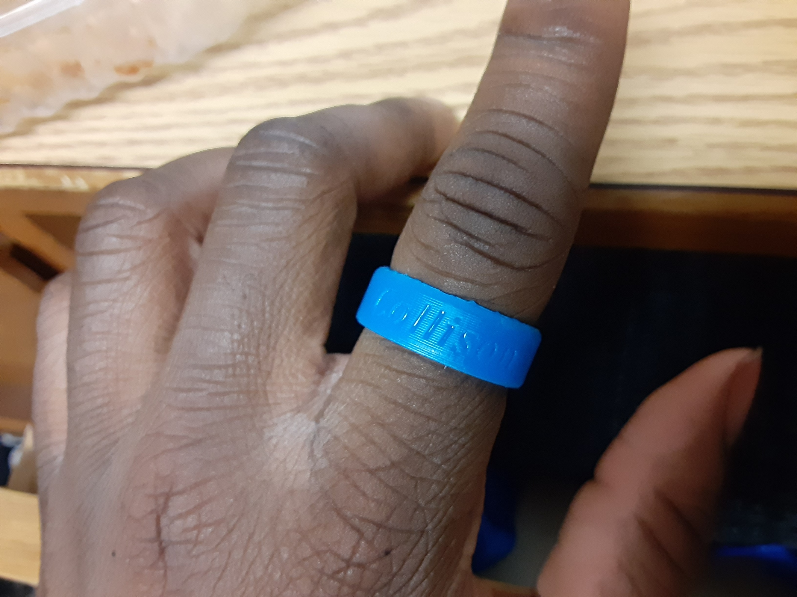
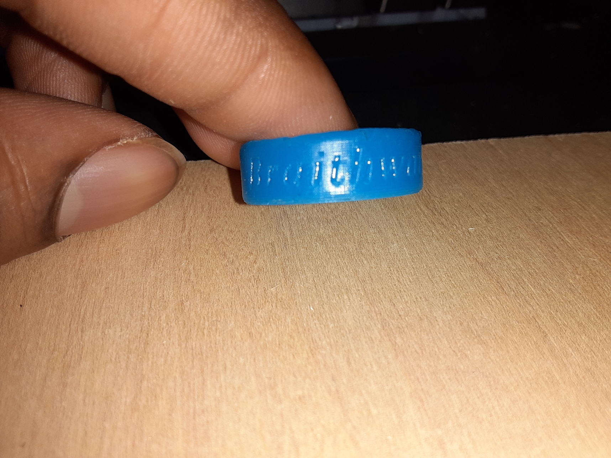
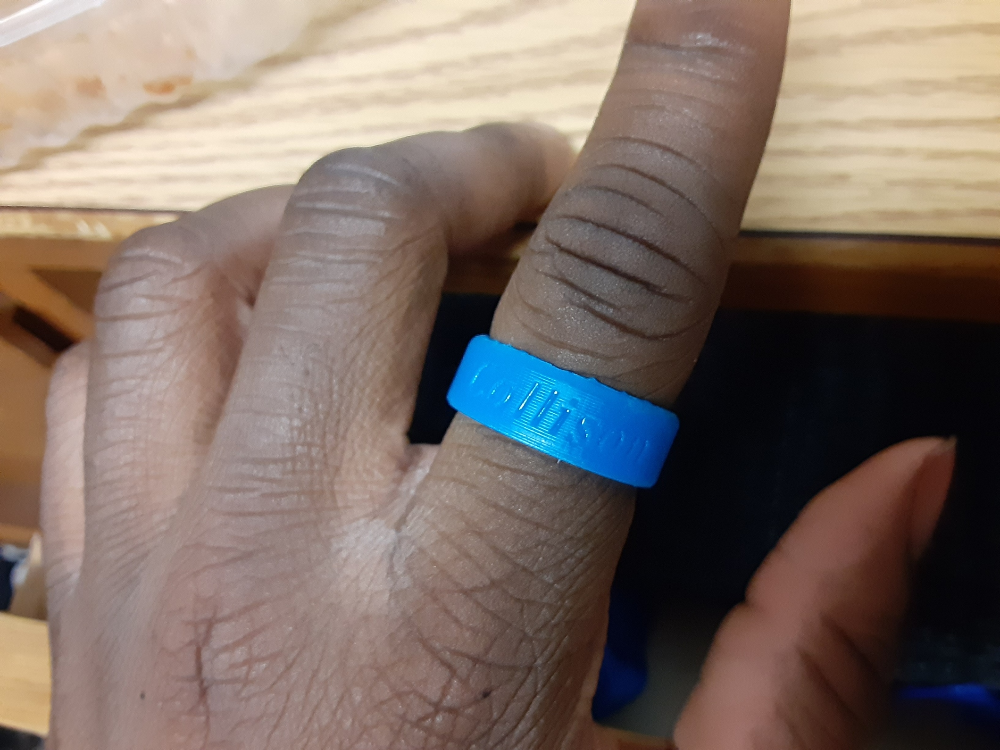

Week 7: SLA Printing
you shoulda put a ring on it
A Different Type of 3D Printing
SLA printing extrudes a solid filament and lays it out for it to resolidify. SLA printing works a bit differently. SLA Printing uses a liquid resin and points a laser at a specific part to solidify it. Although more expensive, this process allows for much more precise prints.
The Spinning Ring
The spinning ring was definetly the design that seemed the coolest to me. It was something that you could mess with when bored. The guide on how to make the spinning ring was very fast paced. This was, at times, both a good and a bad thing. The speed helped me finish speed through parts that were obvious, but there were also many times when I had to go back to look at something because the video was going too fast for me to pick up what happened the first time.
Designing in Fusion360
1. The first part of this process was deciding how big of the ring should be. At the time, I didn't have enough time to measure my own finger, so I just went with something a little bit smaller than the tutorial ring, that being a 20mm diameter.
2. Next was creating the cross section of the ring. this was the most important part of the spinning ring and the part that had me looking back in the video repeatedly.
2. Next was creating the cross section of the ring. this was the most important part of the spinning ring and the part that had me looking back in the video repeatedly.
2. Next was creating the cross section of the ring. this was the most important part of the spinning ring and the part that had me looking back in the video repeatedly.
3. To turn this cross section into a ring, I used the revolve tool at 360 degrees.
4. I Then used fillet to curve the edges. I also needed the edges on the inside of the ring to be curved. The way this was accomplished was by using section analysis to target the edges on the inside.
4. I Then used fillet to curve the edges. I also needed the edges on the inside of the ring to be curved. The way this was accomplished was by using section analysis to target the edges on the inside.
4. I Then used fillet to curve the edges. I also needed the edges on the inside of the ring to be curved. The way this was accomplished was by using section analysis to target the edges on the inside.
5. After the overall shape was complete, I had to add the text to it. I used embosss to attach text to the ring. The size of the text box was found using a tangent plane to the ring two names to names to the ring; Collison and Braithewaite, the last names on both my father and mother's side.
5. After the overall shape was complete, I had to add the text to it. I used embosss to attach text to the ring. The size of the text box was found using a tangent plane to the ring two names to names to the ring; Collison and Braithewaite, the last names on both my father and mother's side.
The final Product
 


